어떤 도구고 무엇을 만들 수 있나요
포토샵, 프리미어, 워드, 엑셀, 피그마를 하나씩 따라 만들어 화제가 된 팀이 있어요. 이 팀이 이번엔 그 복제 과정을 통째로 자동화한 도구를 공개했어요. 이름은 Craft Anything이고, 공개 8일 만에 깃허브 별 2만 개를 받았어요.
아래 화면이 첫 화면이에요. 위에서부터 무엇을 따라 만들지 고르고, 주소를 넣고, 원하는 것을 적은 뒤 오른쪽 아래 Start 버튼(주황색 동그라미)을 누르면 끝이에요.
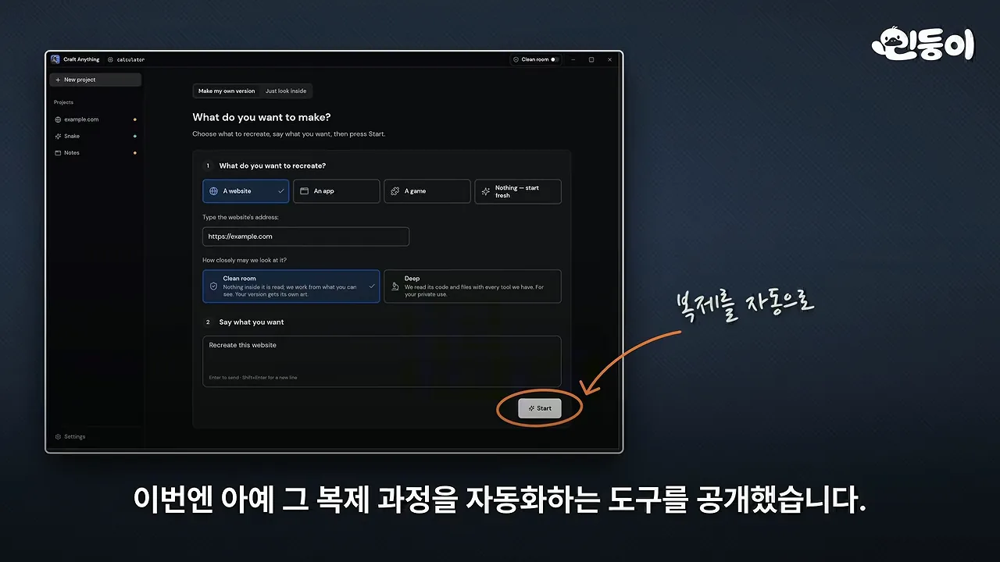
넣는 것과 고르는 것
요청 칸 위에는 'How closely may we look at it?'라는 질문과 함께 Clean room과 Deep 두 카드가 있어요. 왼쪽 Clean room이 기본으로 선택돼 있고, 그 아래 Say what you want 칸에 'Recreate this website'처럼 원하는 결과를 적어요. 두 방식의 차이는 다음 섹션에서 자세히 봐요.
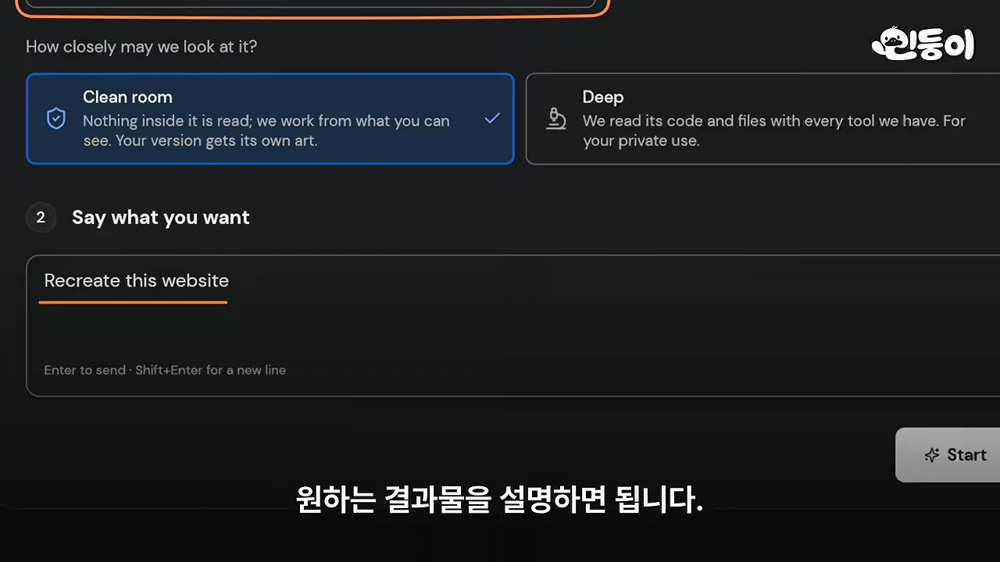
넣을 수 있는 대상은 웹사이트, 윈도우·맥 프로그램, 안드로이드 앱, 유니티나 언리얼로 만든 게임까지예요. 원본이 아예 없어도 돼요. 아래 명령처럼 주소 자리에 -를 넣고 '러스트로 뱀 게임 만들어 줘'라고만 시켜도 만들어요.
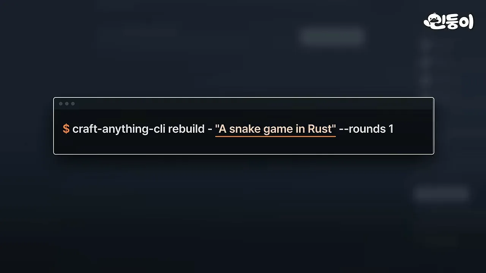
얼마나 빨리 만들었나요
개발사가 남긴 실행 기록(2026-10-18, 윈도우 10, 화면 없이 CLI(Command-Line Interface)로 실행)이 화면에 나와요. 노란색으로 칠한 부분이 핵심 숫자예요.
| 무엇을 | 걸린 시간 | 결과 |
|---|---|---|
| 웹사이트 복제 | 1분 30초 | 원본과 96% 닮은 상태로 완성 |
| 작은 데스크톱 앱 (Rust + egui) | 9분 | 완성. 단, 빌드되는지만 확인 |
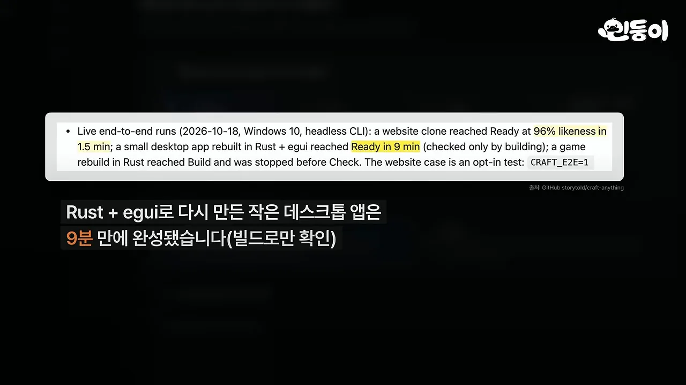
클린룸과 딥: 원본을 어떻게 뜯어보나요
이 채널이 전에 소개한 'REA'는 프로그램 내부를 분석해 작동 방식을 알아내는 도구였어요. Craft Anything은 분석에서 멈추지 않고 복제와 검증까지 한 번에 이어 가요. 화면 오른쪽에 그 네 단계가 손글씨 번역과 함께 세로로 적혀 있어요.
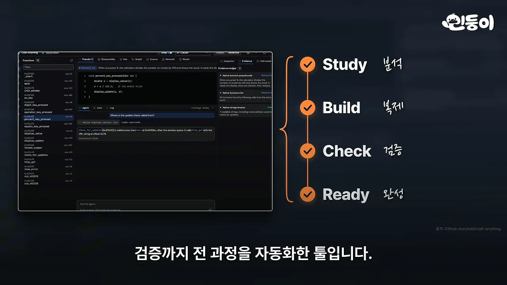
클린룸: 겉으로 보이는 것만
첫 단계인 분석은 클린룸과 딥 두 방식으로 나뉘어요. 클린룸이 기본값이에요. 저장소 설명에서 노란색으로 칠한 'nothing inside the original is read'가 핵심이에요. 원본의 코드도, 파일도, 페이지 소스도 읽지 않는다는 뜻이에요.
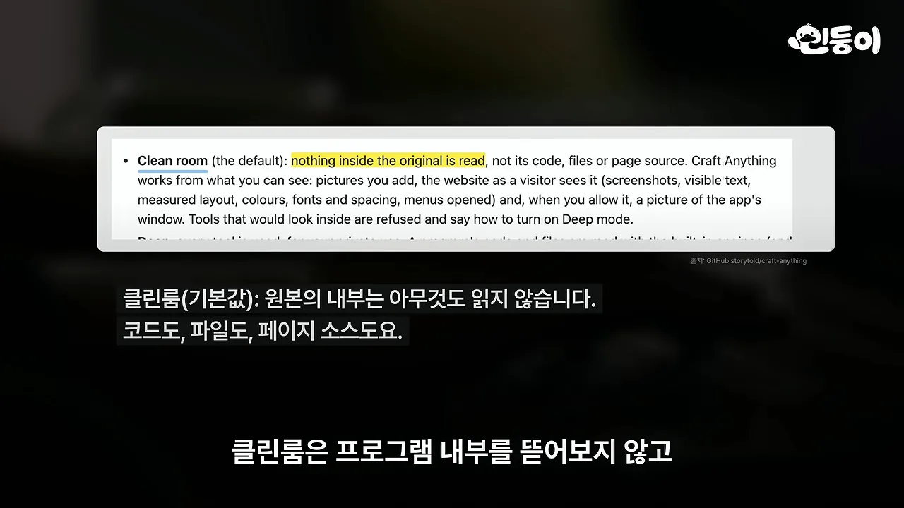
대신 방문자가 보는 그대로를 살펴봐요. 웹사이트라면 화면을 캡처하고 글자, 색상, 배치, 글꼴, 여백을 재고, 메뉴를 눌렀을 때 어떻게 바뀌는지도 확인해요. 아래 결과 화면에서 손글씨로 동그라미 친 곳이 바로 그 항목들이에요. 위쪽에는 첫 페이지 96%, /about 페이지 91%라는 유사도 점수가 보여요. 맨 아래 카드는 robots.txt를 받아 오는 명령을 실행해도 되는지 사람에게 묻고 있어요.
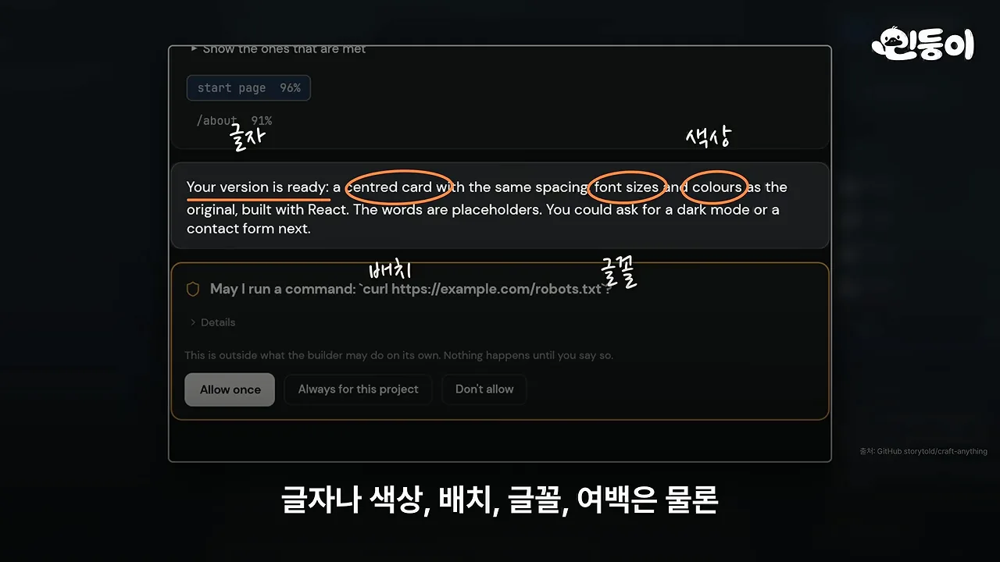
앞에서 말한 포토샵 복제판도 원본 프로그램 내부는 보지 않고 클린룸 방식으로 만들었다고 해요.
딥: 내부까지 열어 보기
딥 모드는 프로그램 내부까지 분석해요. 영상의 비유를 표로 옮기면 이래요.
| 클린룸 (기본값) | 딥 | |
|---|---|---|
| 무엇을 보나요 | 화면, 보이는 글자, 색상, 배치, 글꼴, 여백, 메뉴 동작 | 프로그램 내부 코드와 파일까지 |
| 옷에 비유하면 | 남이 입은 모습만 보고 따라 만들기 | 옷을 뜯어 재단 방식까지 보기 |
| 쓰는 도구 | 겉에서 보는 도구만 | 분석 도구 300여 개, 기드라가 있으면 연결 |
영상은 딥 쪽 분석 속도를 보여 주는 기록도 띄워요. 표 맨 오른쪽 Time 칸의 0.1 s가 노랗게 칠해져 있어요. 340KB짜리 윈도우 시스템 프로그램에서 함수 872개를 찾는 데 0.1초가 걸렸다는 뜻이에요.
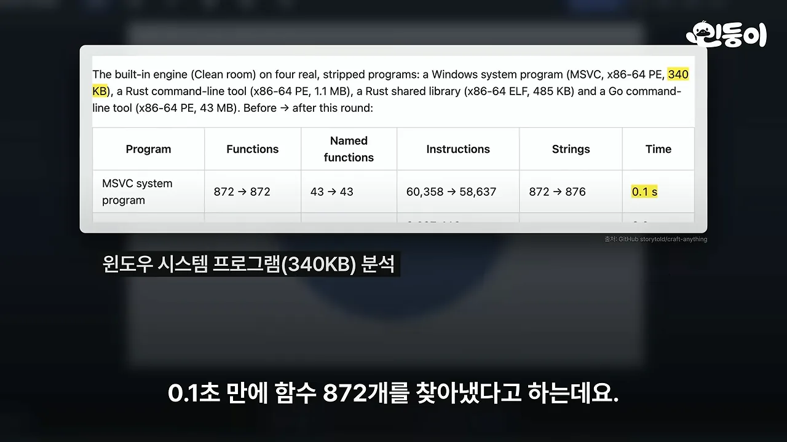
딥에서 기드라가 설치돼 있으면 함께 연결해 내부 구조를 더 깊이 봐요. 화면 왼쪽은 깃허브의 NationalSecurityAgency/ghidra 저장소이고, 오른쪽은 미국 국가안보국 문장이에요. 기드라가 바로 그 기관이 만든 역공학 도구라는 걸 보여 줘요.
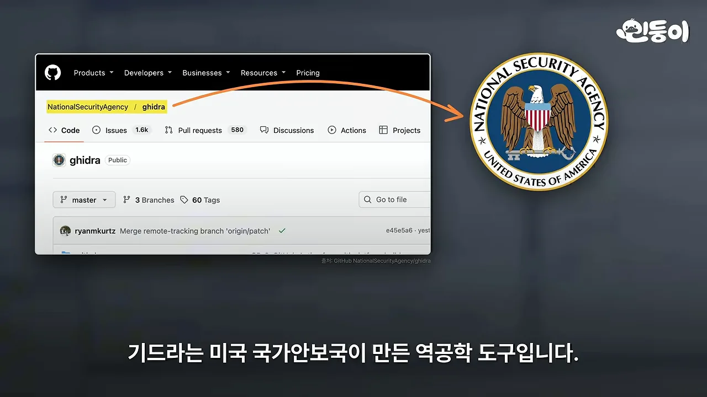
원본과 비교하고 고치기, 그리고 지켜야 할 선
분석한 내용으로 복제판을 만들고 나면 원본과 얼마나 비슷한지 확인해요. 웹사이트는 첫 페이지와, 거기서 연결된 페이지를 최대 12개까지 세 가지 화면 폭으로 캡처해 유사도를 점수로 보여 줘요. 화면 속 원문에서 'start page and up to 12 linked pages'가 노랗게 칠해져 있어요.
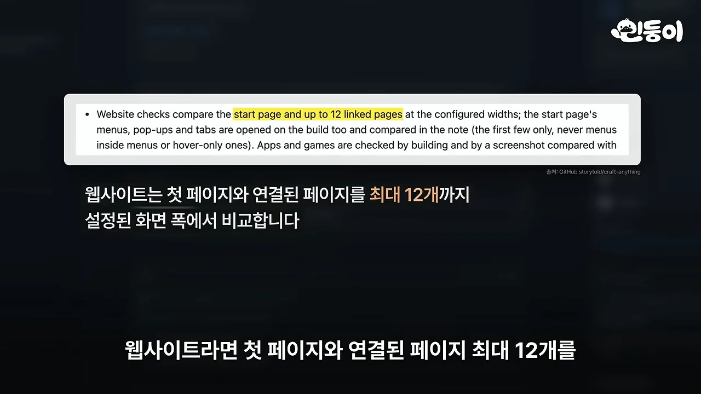
게임은 수치와 동작으로 확인해요
게임은 검증 방식이 조금 달라요. 원본에서 찾아낸 수치를 app/mechanics.json이라는 파일에 따로 적어 두고, 그 수치가 복제판 코드에 실제로 쓰였는지 봐요. 노란색으로 칠한 부분이 '원본에서 찾은 수치가 코드에 안 쓰였으면 실패로 본다'는 규칙이에요.
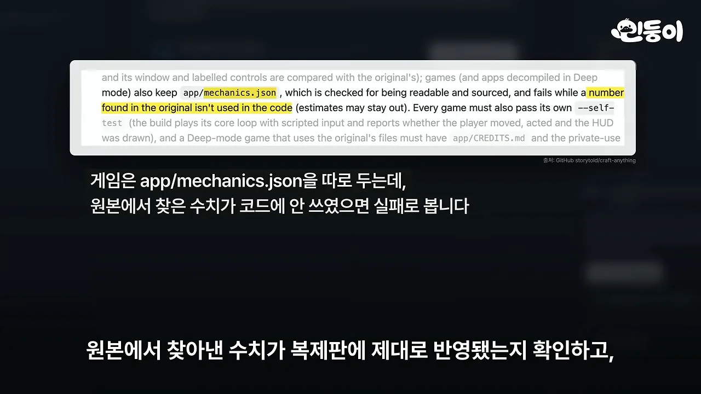
그다음 실제로 돌려 봐요. 화면의 체크 세 개처럼 캐릭터가 움직이는지, 화면이 제대로 나오는지 보고, 테스트를 통과해야 넘어가요.
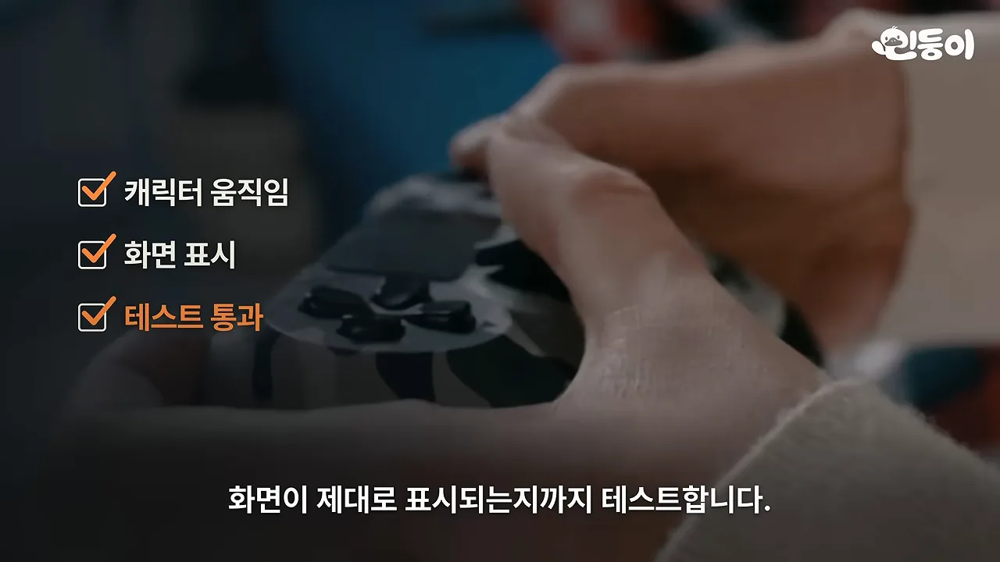
문제가 보이면 다시 고치고 비교해요. 영상이 설명한 흐름을 하나로 그리면 아래와 같아요. 검증에서 걸리면 복제 단계로 돌아가고, 통과하면 완성으로 가요.
아무거나 복제하면 안 돼요
개발사도 선을 그어 뒀어요. 화면 속 Responsible use 문단에서 노란색 두 곳이 핵심이에요. 본인 소유이거나 살펴봐도 되는 소프트웨어에만 쓰고, 복제 방지(DRM), 로그인, 치트 방지 장치는 절대 우회하지 않는다는 내용이에요.
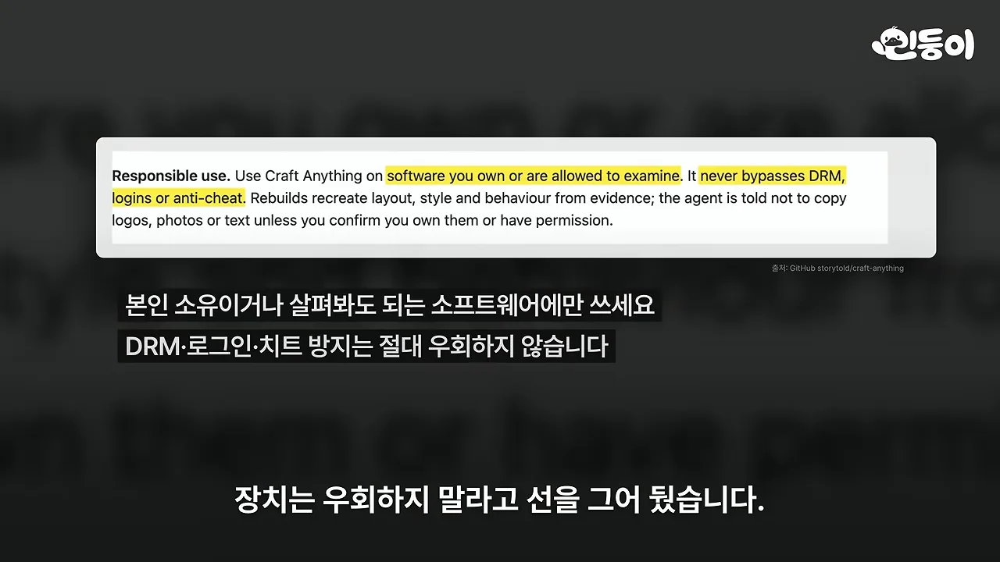
아직 초기 버전이라 복잡한 프로그램까지 얼마나 정확하게 복제할 수 있을지는 더 지켜봐야 한다는 게 영상의 마무리예요.